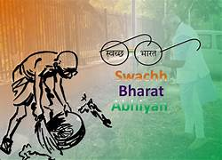
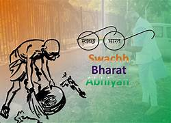

Introduction
Swachh Bharat Abhiyan was launched on October 2, 2014, by Prime Minister Narendra Modi on the occasion of Mahatma Gandhi's birth anniversary. The primary objective is to achieve a clean and open defecation-free India by October 2, 2019, coinciding with Gandhi Jayanti's 150th birth anniversary.
Objectives
- Elimination of open defecation.
- Construction of household and community toilets.
- Solid and liquid waste management.
- Changing people's mindset towards sanitation and hygiene.
Components of Swachh Bharat Abhiyan
- Construction of Toilets: The mission aimed to build individual, community, and public toilets to eradicate open defecation.
- Behavioral Change: Promoting awareness and changing people's mindset towards sanitation and hygiene through campaigns and educational programs.
- Solid Waste Management: Proper disposal and management of solid waste to maintain cleanliness.
- Liquor Ban: Some states also implemented a ban on the sale and consumption of alcohol to maintain cleanliness.
Achievements
- Millions of toilets were constructed across the country, reducing open defecation significantly.
- Swachh Bharat Abhiyan became a people's movement with widespread public participation.
- Increased awareness about the importance of cleanliness and hygiene.
Challenges
- Changing deep-rooted habits and attitudes towards sanitation.
- Adequate waste management infrastructure in rural areas.
- Ensuring the sustainability of the initiative over the long term.
Impact
- Improvement in overall hygiene and sanitation conditions.
- Reduction in waterborne diseases due to improved sanitation facilities.
- Positive impact on the environment through proper waste management.
Recognition
Swachh Bharat Abhiyan gained international recognition and support.
Future Plans
- The mission has evolved into a continuous process with a focus on sustainability.
- Ongoing efforts to maintain cleanliness and hygiene awareness.
.jpeg)
.jpeg) 
